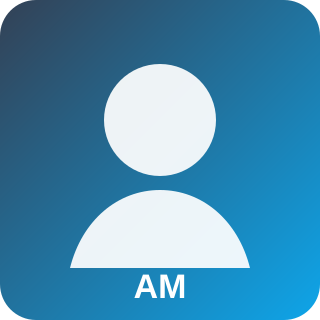

Research interests
- Advanced control
- AC/DC grids
- System resilience

Ali Mousmi works on energy-system control, AC/DC architectures and conversion-chain resilience.
Ali Mousmi works on energy-system control, AC/DC architectures and conversion-chain resilience.
This page is intentionally structured so that each researcher can later add a CV, background, research vision and illustrated projects.

Teaching in automatic control and energy systems.